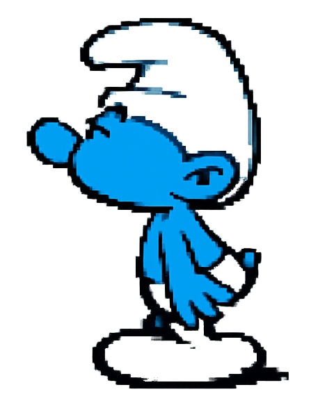

Sorte de petit génie habitant le Pays Maudit, mais que l'on rencontre parfois dans nos régions. Les schtroumpfs ont un laguage spécial: ils parlent schtroumpf. Ils sont, dit-on, très friands d'une plante appelée la salsepareille. La gravure ci-contre représente un schtroumpf.